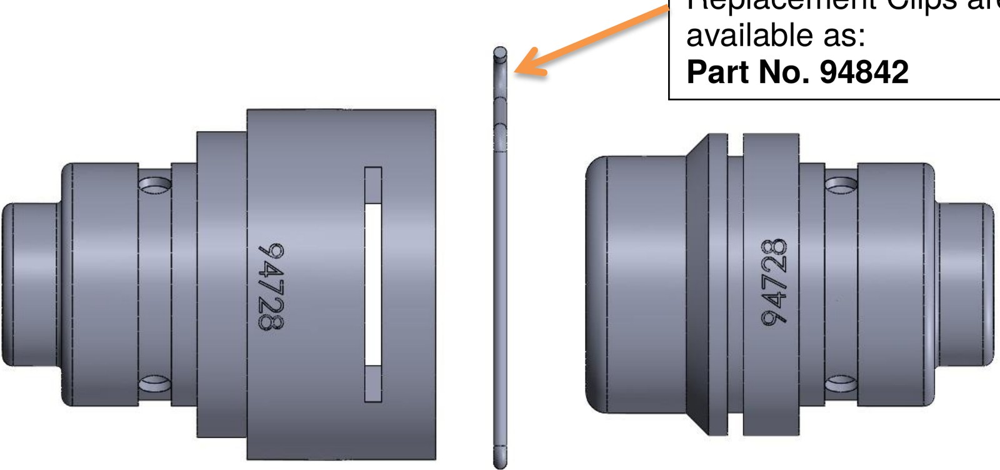

Doc no. MOC-TSB-13-10 // Vol. 13 No. 10 // Mar 28, 2013 // Cooling
BMW Coolant Adapter
9472894842
MOC has brought back the BMW Coolant adapter (Part No. 94728) for use on various models of BMW vehicles. A clip is included with the adapter. Replacement clips can be purchased separately (Part No. 94842). This adapter connects at the water pump.
What's new
This adapter is now available for purchase.
Contact
For more information, contact the Machine & Equipment Department at 866.244.6621.

Part numbers
| Part No. | Description | Notes |
|---|---|---|
| 94842 | available as: | |
| 94728 | Adapter, Coolant, BMW |